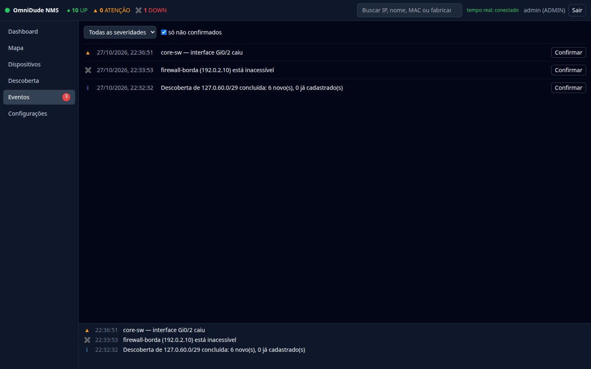
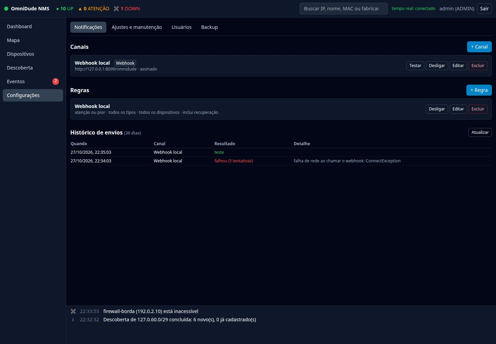
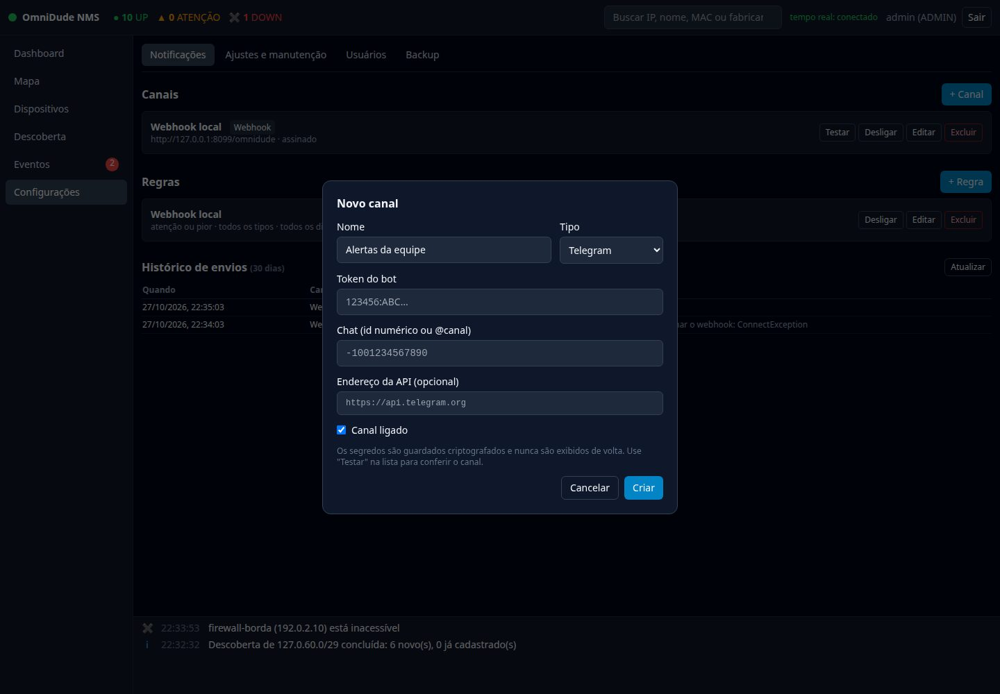
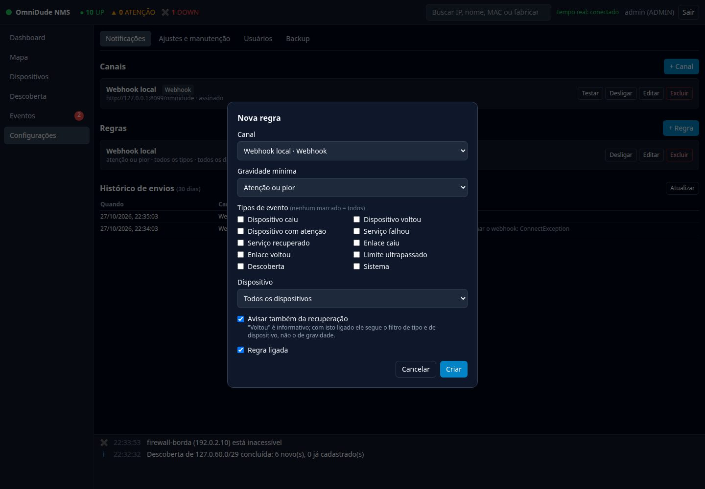

Eventos#
Um evento registra uma mudança de estado. A tela Eventos mostra os mais recentes; a faixa no rodapé do mapa mostra os últimos, e o contador vermelho ao lado do menu conta os ainda não confirmados.


| Tipo | Quando é gerado |
|---|---|
| Dispositivo caiu / voltou | A checagem âncora mudou para DOWN ou voltou a UP. |
| Dispositivo com atenção | O dispositivo responde, mas um serviço falha ou está lento. |
| Serviço falhou / recuperado | Um serviço (que não é a âncora) mudou de estado. |
| Enlace caiu / voltou | Uma interface ligada a um enlace confirmado mudou de estado. |
| Limite ultrapassado | Reservado para limiares de métricas. |
| Descoberta | Uma varredura terminou. |
| Sistema | Avisos do próprio OmniDude, como a troca automática de IP por DHCP ou um conflito de identidade. |
Cada evento tem uma gravidade: informativo, atenção ou crítico.
Confirmar (ack)#
Confirmar marca que alguém viu o evento. Com só não confirmados ligado, a lista mostra apenas o que ainda pede atenção, e o contador do menu diminui.
Notificações#
Em Configurações → Notificações ADMIN. Dois conceitos:
Canal
Diz para onde enviar: um webhook, um bot do Telegram ou um servidor SMTP.
Regra
Diz o que cada canal recebe: gravidade mínima, tipos de evento e dispositivo.


Criar um canal#
- Clique em + Canal, dê um nome e escolha o tipo.
- Preencha os campos do tipo (tabela abaixo) e salve.
- Clique em Testar na lista: o OmniDude envia uma mensagem de teste e mostra o resultado.


| Canal | Configuração | Observações |
|---|---|---|
| Webhook | URL; segredo opcional | POST de um JSON. Com segredo, o corpo vai assinado. Não segue redirecionamentos. |
| Telegram | token do bot; chat (id numérico ou @canal); endereço da API (opcional) | O token vai na URL da API do Telegram: nenhuma mensagem de erro o repete. |
| servidor, porta, segurança (STARTTLS 587, SSL/TLS 465 ou nenhuma 25), remetente, destinatários, usuário e senha (opcionais) | Texto simples em UTF-8. O STARTTLS é exigido: nunca cai para texto puro sem avisar. |
Os segredos (segredo do webhook, token, senha) ficam cifrados no banco; a tela só informa se existem. Ao editar, deixar o campo em branco mantém o atual.
Criar uma regra#
Em Regras, + Regra:


- Canal: quem recebe.
- Gravidade mínima: qualquer (informativo ou pior), atenção ou pior ou só críticos.
- Tipos de evento: nenhum marcado significa todos.
- Dispositivo: todos, ou só um.
- Avisar também da recuperação: “voltou” é informativo, então, com esta opção ligada, ele segue o filtro de tipo e de dispositivo em vez do de gravidade. Sem isso, uma regra “atenção ou pior” avisaria da queda e nunca da volta.
Receita comum: um canal para o plantão, com uma regra “atenção ou pior” e recuperação ligada; outro canal de baixa prioridade com tudo (“qualquer”), para consulta posterior.
Um canal com duas regras que casam com o mesmo evento recebe uma mensagem só.
Confiabilidade e anti-ruído#
- O envio é assíncrono: não atrasa a checagem que gerou o evento.
- Até 3 tentativas para falha de rede, resposta 5xx ou 429. Erros de configuração (4xx, senha recusada) não são repetidos.
- A mesma mensagem não vai duas vezes ao mesmo canal dentro de uma janela (60 s por padrão; ajustável).
- No máximo 30 mensagens por minuto por canal; o excedente é registrado como suprimido.
- O modo de manutenção suspende todas as notificações.
Histórico de envios#
Cada resultado final fica no histórico (30 dias): enviada, falhou (com o motivo), suprimida ou teste. É o primeiro lugar para olhar quando um alerta “não chegou”.
Webhook#
O OmniDude faz um POST com um JSON como este:
{
"source": "omnidude",
"eventId": 42,
"ts": 1793147934,
"severity": "CRITICAL",
"type": "DEVICE_DOWN",
"deviceId": 12,
"deviceName": "firewall-borda",
"message": "firewall-borda (192.0.2.10) está inacessível"
}Se o canal tem segredo, o corpo é assinado com HMAC-SHA256 e a assinatura vai no cabeçalho X-OmniDude-Signature: sha256=<hex>. Para validar no receptor (Python):
import hmac, hashlib
def valido(corpo: bytes, cabecalho: str, segredo: str) -> bool:
esperado = "sha256=" + hmac.new(segredo.encode(), corpo, hashlib.sha256).hexdigest()
return hmac.compare_digest(esperado, cabecalho)Calcule a assinatura sobre o corpo exatamente como recebido, antes de decodificar o JSON. Responda com 2xx; outros status contam como falha.
Telegram e e-mail foram testados contra servidores locais simulados (HTTP e SMTP), não contra a API real do Telegram nem um provedor SMTP; STARTTLS e SSL não foram exercitados. Use Testar para validar o seu.